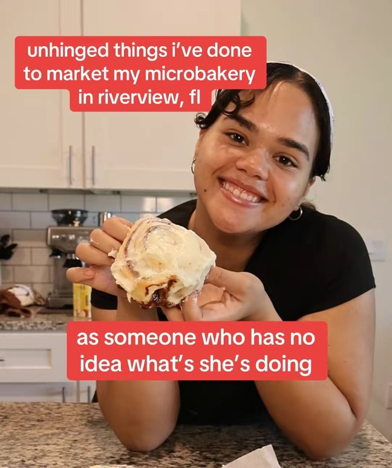
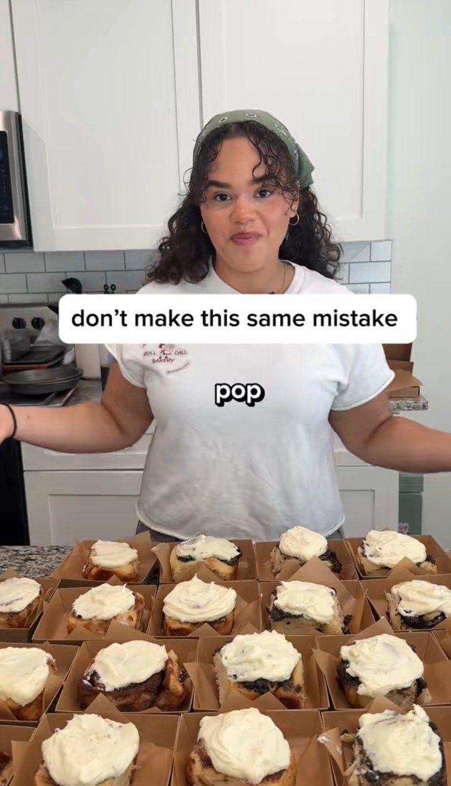
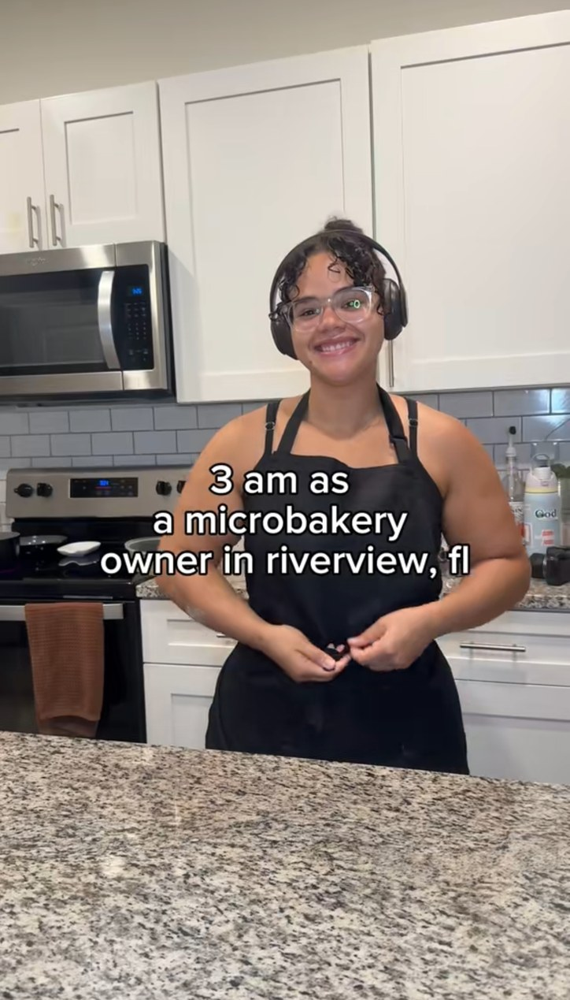

content
food content, made in a real kitchen
I make baking and small business content around Roll Call: early bake mornings, sold-out pop-ups, recipes from scratch, and the occasional experiment that goes wrong. I film what actually happens, not a cleaned up version of it.
recent videos



will it roll?
A series where I take a random ingredient and try to turn it into a cinnamon roll. Some of them work. All of them teach me something.
working together
I’m open to gifted collabs, dedicated videos, and affiliate partnerships. The media kit has the numbers and the details.